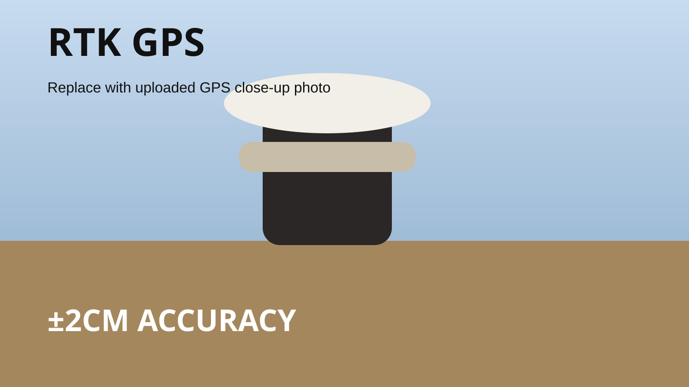
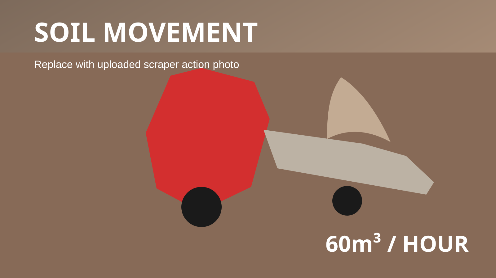
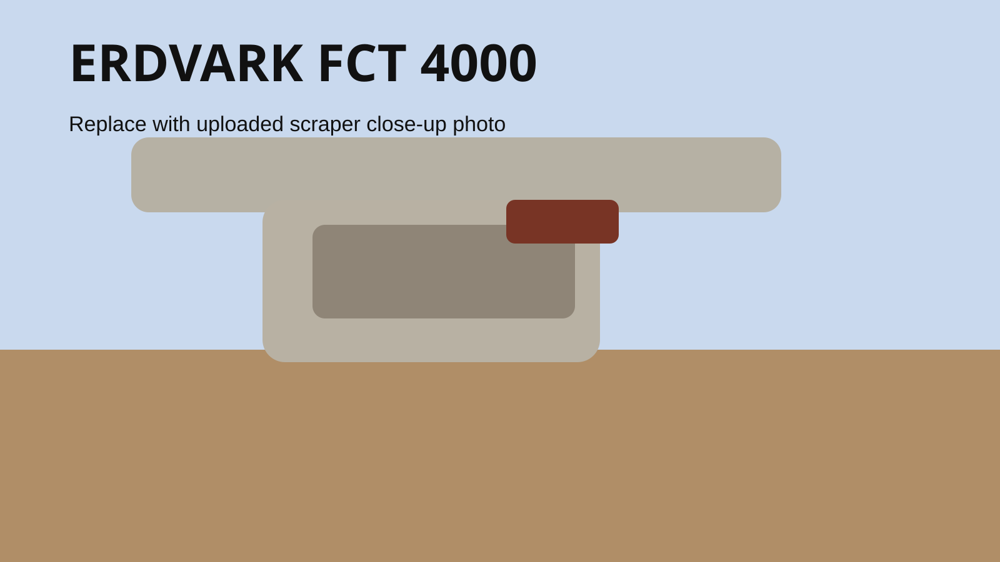
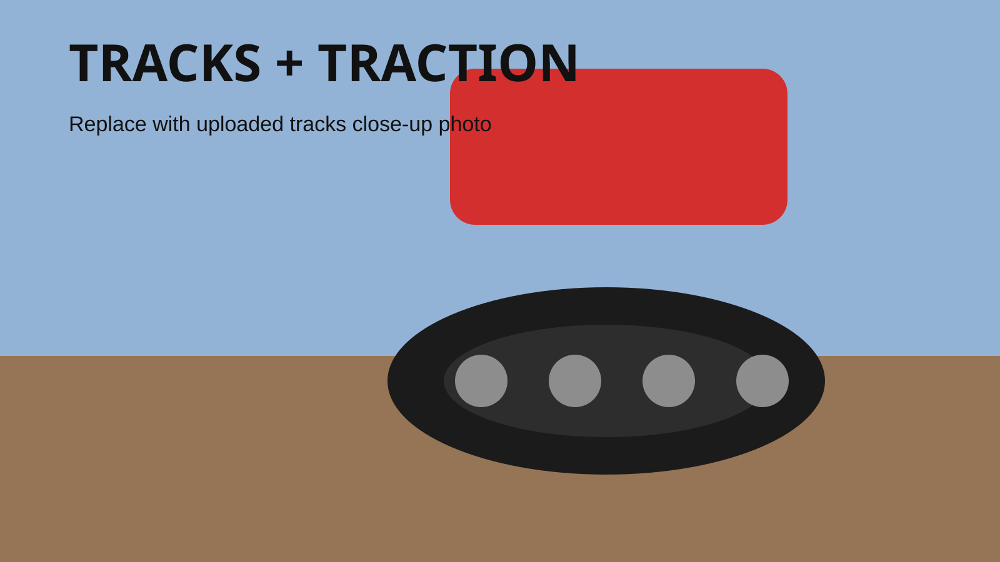

RTK GPS
±2cm
Accuracy on grade control

Precision Agriculture. Heavy-Duty Results.
Precision Landforming & Leveling
Powerful machinery, RTK GPS accuracy, and efficient grading solutions built for irrigation performance, better water flow, and cleaner field preparation.
What We Do
We specialize in precision landforming using RTK GPS technology, ensuring accurate grading, improved water flow, and maximum efficiency for your farm.
Every pass is focused on practical outcomes: better irrigation performance, improved field consistency, and land that is ready to work harder for you.
Key Stats

Accuracy on grade control

Soil moved per hour

Moved every pass

Controlled cut per pass

Completed per day

Equipment
Built for power, efficiency, and precision.
High-output pulling power with track-ready performance to keep productivity high while reducing compaction in the field.
Designed for consistent soil movement, precise cut and fill control, and practical land shaping over large areas.
Benefits
Tracks spread weight and help protect the field surface while work gets done.
Stable pulling power keeps the scraper working efficiently across long runs.
Accurate design and controlled passes reduce wasted movement and repeat work.
Fast surveying, efficient grading, and measured output keep projects moving.
3 Step Process

We map the land accurately to understand fall, flow, and cut-and-fill needs.
We generate a grading plan that targets efficiency, irrigation flow, and finish.
The machine work follows the design precisely to shape land with confidence.
Gallery
Ready To Transform Your Land?